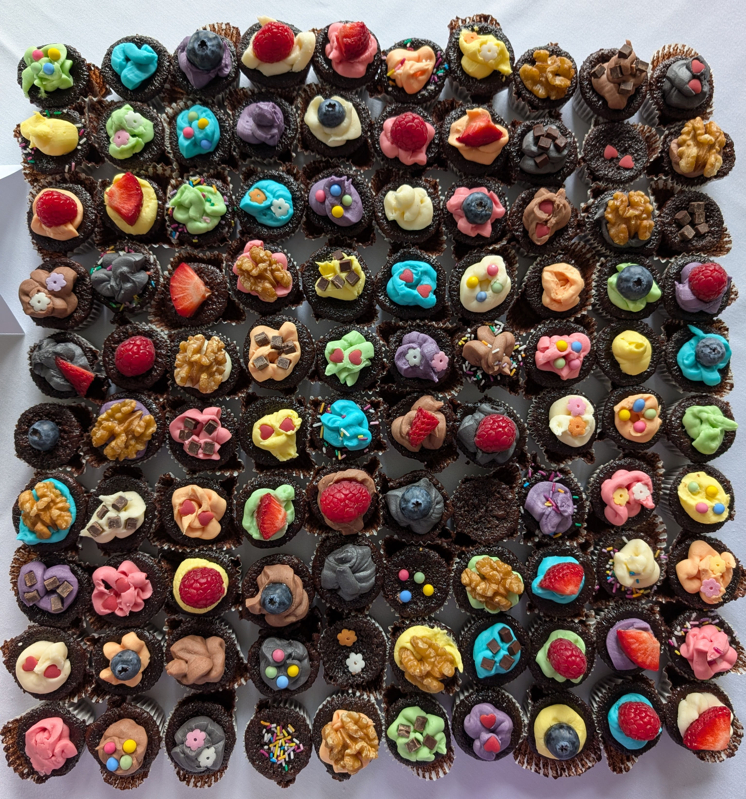
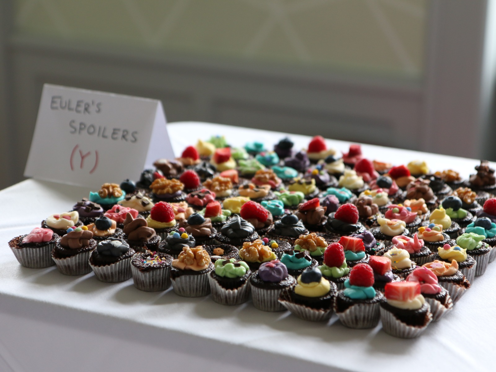

Baking
I enjoy baking, most of which is non-mathematical. However, here are a few photos of mathematical baked goods I’ve made over the years.

 
These form a pair of mutually orthogonal 10×10 Latin squares; each color of icing and each topping appears exactly once in each row and column, and each combination appears exactly once. Euler conjectured in 1782 that such a configuration does not exist; this example, due to Bose–Parker–Shrikhande (1959), disproves Euler’s conjecture.